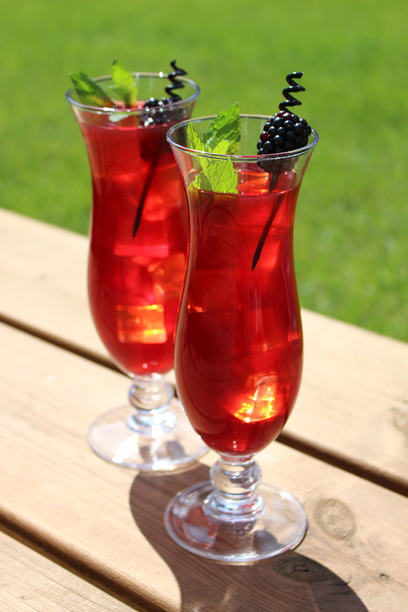

Blackberry Mint Iced Tea
ingredients
- 1/4 Cup mint leaves, crushed
- 4 Cups boiling water
- 1/2 Cup sugar
- 6 Packages (6 ounces each) Driscoll's Blackberries
- 5 black tea bags
preparations
- RESERVE two or three blackberries per serving of tea for garnish.
-
PURÉE remaining 6 packages blackberries in a blender or food processor.
- SERVE over ice.
-
GARNISH each serving with mint leaves and two or three whole
blackberries.